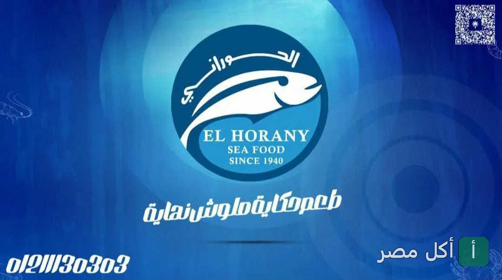

فليه
50 جنيه
اختار طلبك من المنيو وكلمنا على 01211130303.

الأسعار بالجنيه المصري من صفحة أكل مصر (آخر تحديث معلن: ١٤ أغسطس ٢٠٢٦). أكد السعر مع المطعم عند الطلب.
50 جنيه
50 جنيه
80 جنيه
70 جنيه
100 جنيه
جمبري مقلي/مشوي كبير بخلطة الحوراني
جمبري/بطارخ/سبيط بخلطة الحوراني يقدم مع مشروب غازي
205 جنيه
فلية مقلي بتتبيلة الحوراني يقدم مع أرز الصيادية و طحينة و مخلل
80 جنيه
فلية / كفتة مقلي بتتبيلة الحوراني المميزة يقدم مع أرز الصيادية و طحينة و مخلل
85 جنيه
جمبري وسط مقلي بتتبيلة الحوراني يقدم مع أرز الصيادية و طحينة و مخلل
130 جنيه
بلطي مقلي بتتبيلة الحوراني المميزة يقدم مع أرز الصيادية و طحينة و مخلل
115 جنيه
فيلية/جمبري مقلي بتتبيلة الحوراني يقدم مع أرز الصيادية و طحينة و مخلل
140 جنيه
سبيط فيلية مشوي بتتبيلة الحوراني يقدم مع أرز الصيادية و طحينة و مخلل
125 جنيه
فيلية/جمبري/سبيط/كفتة جمبري مقلي بتتبيلة الحوراني يقدم مع أرز الصيادية و طحينة و مخلل
170 جنيه
جمبري بتتبيلة الحوراني يقدم مع مكرونة صوص ابيض/أحمر مكرونة بنا / اسباجتي
160 جنيه
جمبري مشوي كبير بتتبيلة الحوراني يقدم مع أرز صيادية و طحينة و مخلل
220 جنيه
جمبري بقشره/جندوفلي/كفتة سيفود سمك فيلية مشوي بتتبيلة الحوراني يقدم مع أرز الصيادية و طحينة و مخلل
230 جنيه
كاليماري/جندوفلي/سبيط/سمك فيلية جمبري بقشره و جمبري مقشر بتتبيلة الحوراني يقدم مع مكرونة صوص ابيض مكرونة بنا /اسباجتي
260 جنيه
جمبري بقشره/جندوفلي/كفتة جمبري سبيط/سمك فيلية مشوي بتتبيلة الحوراني يقدم مع أرز الصيادية و طحينة و مخلل
300 جنيه
جمبري، بلح البحر، جندوفلي، كابوريا، سبيط بخلطة الحوراني الخاصة
240 جنيه
5 جنيه
10 جنيه
12 جنيه
18 جنيه
35 جنيه
36 جنيه
55 جنيه
22 جنيه
44 جنيه
55 جنيه
65 جنيه
75 جنيه
105 جنيه
110 جنيه
170 جنيه
170 جنيه
10 جنيه
15 جنيه
25 جنيه
25 جنيه
30 جنيه
40 جنيه
50 جنيه
أربعة شرائح بلطي مقلي سنجاري، 4 قطع جمبري مقلي، رأس، أرز، سلطة، طحينة
500 جنيه
اثنان شيش فيلية، اثنان شيش كفتة، 4 قطع جمبري، أرز، سلطة، طحينة
580 جنيه
ثلاث سندوتشات جمبري، ثلاث فيلية، ثلاث سبيط، ثلاث حواوشي، ثلاث كفتة جمبري، جرجير، ليمون، فلفل أخضر
600 جنيه
أربعة شريحة بلطي مقلي، فيلية مشوي، فيلية مقلي، جمبري مقشر، كفتة جمبري، أرز، الصلابة، سلطات، عيش
1 جنيه
أربعة شريحة بوري مشوي سنجاري، أربعة شريحة بلطي مقلي سنجاري، فيلية مشوي، جمبري مقلي، رأس، 4 قطع جمبري مشوي، سبيط مشوي، جمبري مقشر، أرز صيادية، سلطات، عيش
1 جنيه
جمبري، سبيط، فيلية، كفتة بخلطة الحوراني الخاصة، يقدم بصوص أحمر أو أبيض
185 جنيه
مكرونة بنا، جمبري، فيلية، سبيط، جبنة موتزاريلا، بخلطة الحوراني، يقدم بصوص أحمر أو أبيض أو اسباجتي
200 جنيه
طاجن بلطي وجمبري، مقشر، سبيط بخلطة الحوراني الشهية، يقدم بصوص أحمر أو أبيض
320 جنيه
ملوخية بالجمبري طازجة بخلطة الحوراني المميزة
145 جنيه
جمبري، فيلية، جندوفلي، كابوريا بخلطة الحوراني الخاصة
145 جنيه
شوربة جمبري بخلطة الحوراني الخاصة
150 جنيه
جمبري، سبيط، فيلية بخلطة الحوراني الخاصة
160 جنيه
الأصناف والأسعار من صفحة أكل مصر المنشورة. أكد تفاصيل طلبك والسعر مع المطعم عند الاتصال.